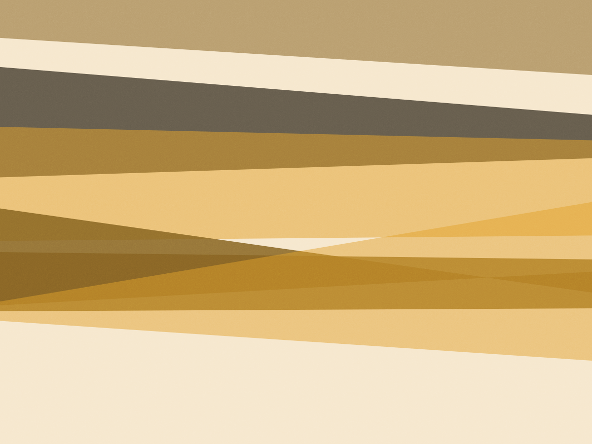
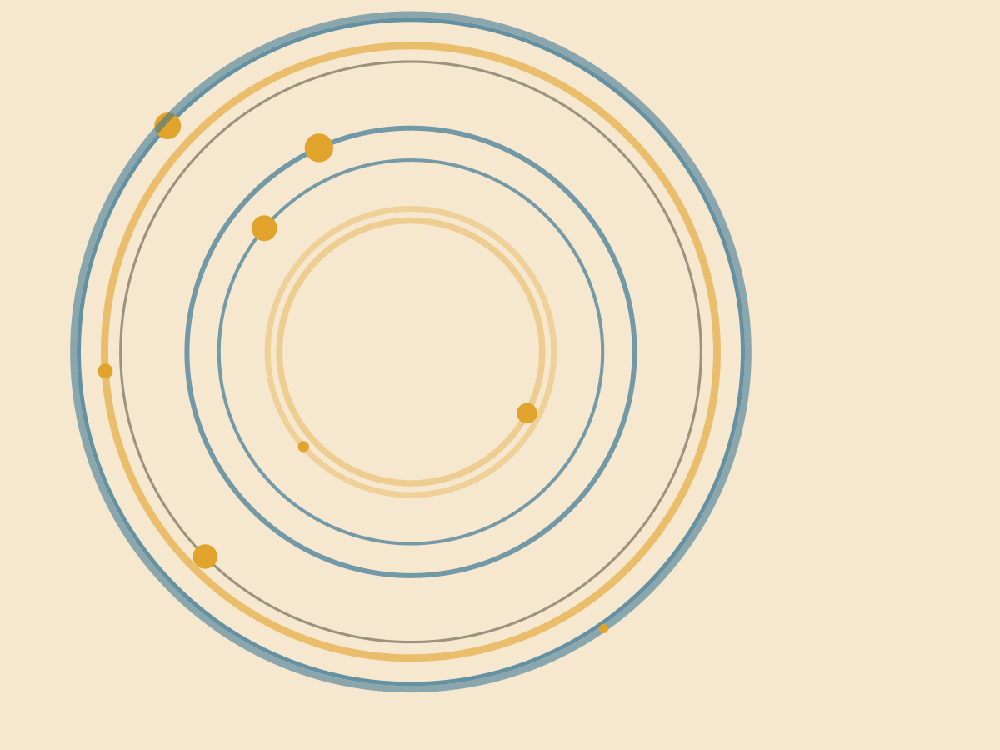
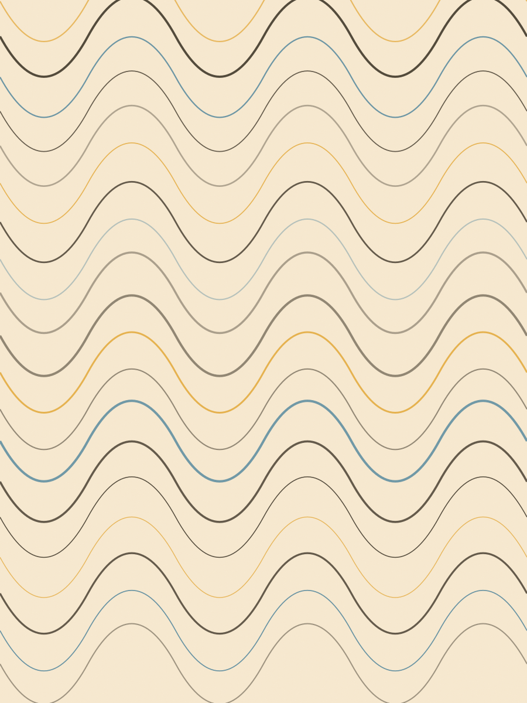
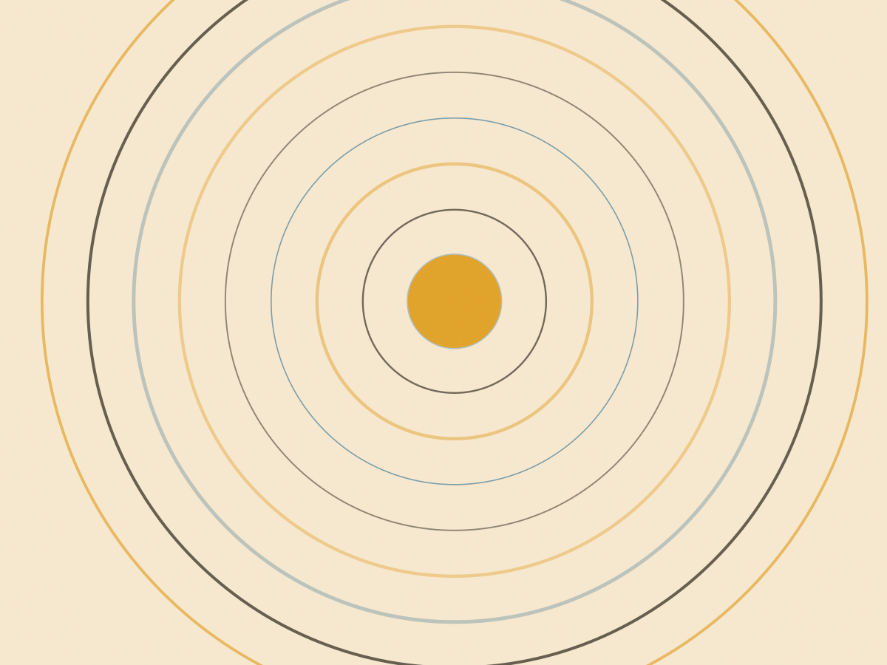
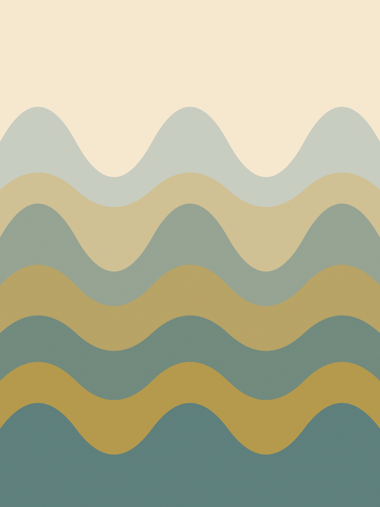
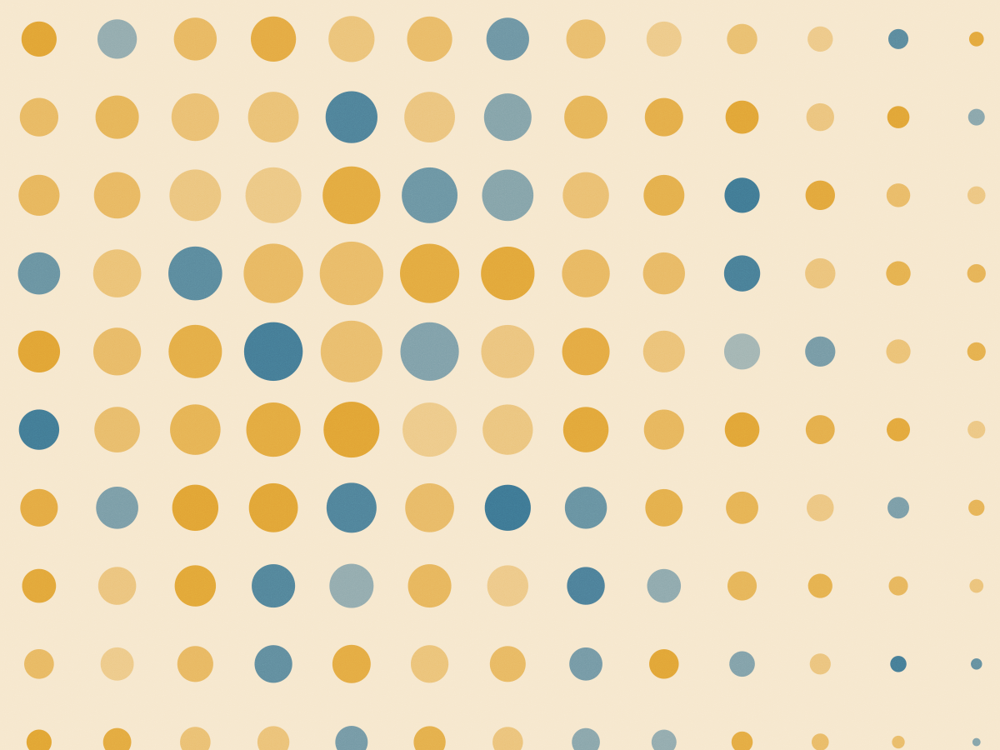

Banho
Shampoo conforme a pele: seborreia, alergia ou pelo normal. Secagem com soprador em temperatura morna e toalha de microfibra no fim. A cara nunca leva ar direto.
R$ 65 porte P · ~1h10
Rua Fradique Coutinho, 980
Banho e tosa em Pinheiros desde 2016
O banho do seu cachorro dura o tempo que a pelagem dele pede: 1h10 para um poodle de 6 kg, 2h40 para um golden que dormiu no barro. Tosa na máquina R$ 95, na tesoura R$ 150. Buscamos e devolvemos dentro de Pinheiros.

Cada cão tem uma escova guardada com o nome dele na ficha. Chegou aqui, subiu na bancada e já se sabe onde o pelo embola — pescoço, atrás da orelha e a base do rabo.
Shampoo conforme a pele: seborreia, alergia ou pelo normal. Secagem com soprador em temperatura morna e toalha de microfibra no fim. A cara nunca leva ar direto.
R$ 65 porte P · ~1h10
Pata, barriga, bumbum e dentro da orelha. É o corte que resolve o barro da rua sem mudar o desenho do corpo. Sempre com tesoura onde a máquina assusta.
R$ 45 +20 min no banho
Lâmina 7F no corpo, 10F nas patas. Rente o suficiente para durar oito semanas, comprido o suficiente para não queimar no sol. Pelo duplo, como spitz e husky, não passa máquina rente.
R$ 95 +30 min no banho
Para shih-tzu, lhasa e poodle que vão para exposição. Feita pelo Wesley, com tesoura reta e entrosa. Duas horas de trabalho e nenhum barulho de máquina.
R$ 150 +40 min no banho
Medido na nossa bancada, com o cão seco. Pelo em nó soma meia hora e a gente liga antes de desembaraçar ou tosar rente.
| Porte | Peso | Banho | Tosa máquina | Tempo |
|---|---|---|---|---|
| P | até 8 kg | R$ 65 | R$ 95 | 1h10 |
| M | 8 a 15 kg | R$ 80 | R$ 110 | 1h40 |
| G | 15 a 25 kg | R$ 100 | R$ 135 | 2h10 |
| GG | acima de 25 kg | R$ 120 | R$ 155 | 2h40 |
Vale por seis meses, sem dia fixo e sem multa por faltar. Se o cão mudar de porte no meio do caminho, a diferença é ajustada no próximo banho.
Mais pedido
Quatro banhos, porte P
R$ 232 avulso sairia R$ 260
Um banho a cada duas semanas cobre o intervalo entre uma tosa e outra sem o pelo chegar no nó.
Fotos da bancada, sem filtro. O tempo embaixo de cada uma é o que a ficha marcou no dia — não é média.





A Amendoim chegava tremendo e saía querendo ficar. A Aline deixou eu ver a secagem pelo vidro na primeira vez, e nunca mais precisei pedir.
Cláudia Bertoni, tutora da Amendoim (poodle, 6 anos) — Pinheiros
O Tofu voltou com a orelha seca de verdade e sem o cheiro de úmido que durava dois dias em outro lugar. Levaram 2h35, como tinham avisado.
Paulo Kondo, tutor do Tofu (golden, 4 anos) — Vila Madalena
Pedi para não tosar rente por causa da pele dele e a tosadora me mostrou a lâmina antes de ligar a máquina. Ninguém fez isso antes.
Sandra Vilela, tutora do Bolota (lhasa, 11 anos) — Sumaré
A van sai com dois horários por período. Você deixa o cão na portaria do prédio e recebe ele de volta seco, com o laço que a gente combinar.
WhatsApp com nome, raça e peso. A recepção responde com a janela de busca do dia — manhã ou tarde, nunca os dois.
Duas caixas por viagem, uma por cão. Dentro de Pinheiros a busca é grátis em pedido acima de R$ 130.
Pele, nó e remela de olho ficam anotados. Se aparecer carrapato ou ferida, a recepção liga antes de continuar.
Devolução entre 15h e 18h. Se a tosa passar do tempo previsto, a gente avisa e segura o cão até você chegar.